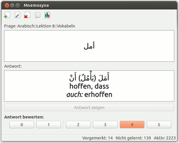
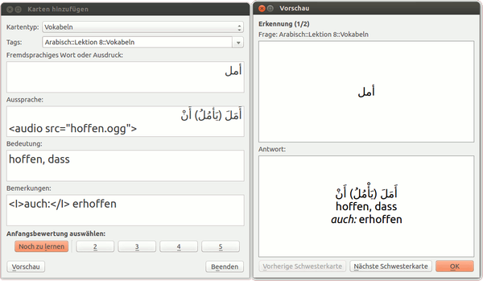
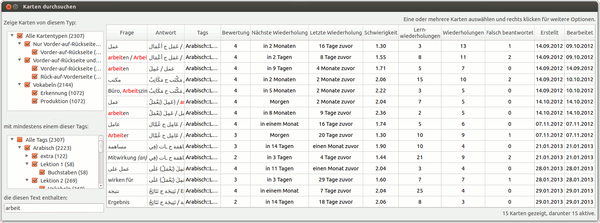
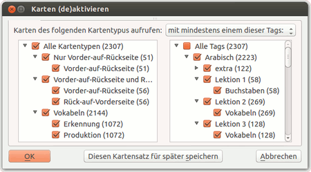
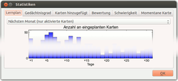
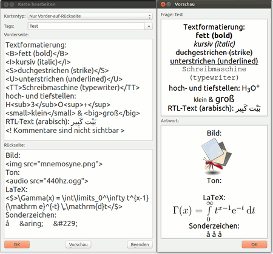
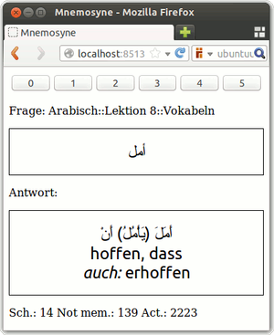

Mnemosyne
Dieser Artikel wurde für die folgenden Ubuntu-Versionen getestet:
Ubuntu 16.04 Xenial Xerus
Ubuntu 14.04 Trusty Tahr
Zum Verständnis dieses Artikels sind folgende Seiten hilfreich:
Mnemosyne  ist eine Lernkartensoftware, die sich nicht nur zum Lernen von Vokabeln, sondern auch von verschiedensten anderen Wissensinhalten eignet. Das Programm zeichnet sich durch die Nutzung verschiedenartiger Medien (Bilder, Audios, Videos, LaTeX), die hierarchische Strukturierbarkeit der Lernkarten mittels Tags sowie die Möglichkeit aus, Lernkarten samt Lernstatus zwischen verschiedenen Computern zu synchronisieren oder Karten mit anderen Nutzern zu teilen. Dank Unicode-Unterstützung können auch fremde Schriften und Sonderzeichen problemlos genutzt werden. Es stehen mehrere Kartentypen für unterschiedliche Frage-Antwort-Situationen zur Verfügung. Die Planung der Wiederholungen basiert auf einer leichten Modifikation des bewährten SM-2 Algorithmus.
ist eine Lernkartensoftware, die sich nicht nur zum Lernen von Vokabeln, sondern auch von verschiedensten anderen Wissensinhalten eignet. Das Programm zeichnet sich durch die Nutzung verschiedenartiger Medien (Bilder, Audios, Videos, LaTeX), die hierarchische Strukturierbarkeit der Lernkarten mittels Tags sowie die Möglichkeit aus, Lernkarten samt Lernstatus zwischen verschiedenen Computern zu synchronisieren oder Karten mit anderen Nutzern zu teilen. Dank Unicode-Unterstützung können auch fremde Schriften und Sonderzeichen problemlos genutzt werden. Es stehen mehrere Kartentypen für unterschiedliche Frage-Antwort-Situationen zur Verfügung. Die Planung der Wiederholungen basiert auf einer leichten Modifikation des bewährten SM-2 Algorithmus.
Mnemosyne wird von Peter Bienstman seit 2006 entwickelt und steht für Linux, Mac OS X und Windows bereit. Seit Anfang 2015 gibt es auch einen vollwertigen Android-Client, mit dem sich (Lern-)Wiederholungen durchführen lassen. Zum Erstellten und Editieren von Lernkarten muss dieser mit dem Desktop-Programm synchronisiert werden. Alternativ können ab Version 2.3 die (Lern-)Wiederholungen im Webbrowser durchgeführt werden, falls ein passender Server eingerichtet ist. Auf diesem Weg ist die Nutzung auch mit anderen Mobilgeräten (z. B. unter iOS) möglich. Die Software ist in Python unter Verwendung von Qt geschrieben (bis einschließlich Version 2.3.6 in Python 2 und PyQt 4, ab Version 2.4 in Python 3 und PyQt 5). Bis Version 1.2.2 steht Mnemosyne unter der GPL v2 bzw. ab Version 2.0 unter der AGPL v3 (Ausnahme: Sync-Client LGPL v3) und ist somit freie Software. Als Entwicklungsplattform wird launchpad.net genutzt.
Installation¶
Hinweis:
Bei Ubuntu 14.04 (Trusty Tahr) bis einschließlich Ubuntu 16.10 (Yakkety Yak) ist Mnemosyne 2.2.1 (vom April 2013) über die Paketquellen installierbar. Diese hinkt der aktuellen Entwicklung deutlich hinterher. Beispielsweise fehlt noch die Synchronisation mit Mnemosyne auf Android-Geräten. Mnemosyne 2.4 (vom Dezember 2016) ist ab Ubuntu 17.04 (Zesty Zapus) in den Paketquellen enthalten. Das aktuelle Mnemosyne 2.5 kann nur manuell installiert werden. Für weitere Details siehe Änderungshinweise .
Mnemosyne kann durch folgendes Paket aus den Quellen installiert[1] werden:
mnemosyne (universe)
 mit apturl
mit apturl
Paketliste zum Kopieren:
sudo apt-get install mnemosyne
sudo aptitude install mnemosyne
Manuell¶
Hinweis!
Fremdsoftware kann das System gefährden.
|  |
| Mnemosyne 2.2.1 unter Ubuntu 12.10 |
Die aktuellste Version findet man als .tgz-Archiv auf der Download-Seite  des Projekts. Diese Datei muss heruntergeladen und entpackt[3] werden.
des Projekts. Diese Datei muss heruntergeladen und entpackt[3] werden.
Mnemosyne 2.3.6¶
Bis einschließlich Version 2.3.6 müssen vor der Installation folgende Pakte installiert[1] werden:
python-cherrypy3 (universe)
python-virtualenv (universe)
python-qt4-dev
pyqt4-dev-tools
qt4-designer
python-qt4-sql
libqt4-sql-sqlite
python-matplotlib (universe)
python-qt4-phonon
python-sphinx
python-webob
python-setuptools
mit apturl
Paketliste zum Kopieren:
sudo apt-get install python-cherrypy3 python-virtualenv python-qt4-dev pyqt4-dev-tools qt4-designer python-qt4-sql libqt4-sql-sqlite python-matplotlib python-qt4-phonon python-sphinx python-webob python-setuptools
sudo aptitude install python-cherrypy3 python-virtualenv python-qt4-dev pyqt4-dev-tools qt4-designer python-qt4-sql libqt4-sql-sqlite python-matplotlib python-qt4-phonon python-sphinx python-webob python-setuptools
Nachdem mit der Installation dieser Pakete die Voraussetzungen zur Installation von Mnemosyne geschaffen sind, öffnet man ein Terminal-Fenster[4] in dem Verzeichnis, das man nach dem Entpacken obiger .tgz-Datei erhalten hat (z. B. ./Mnemosyne-2.3.6/), und führt[5]
sudo python setup.py install
aus. Hiermit wird Mnemosyne unter /usr/local/ installiert. Zum Testen der Installation wechselt man in ein anderes Verzeichnis und kann Mnemosyne durch Eingabe von
mnemosyne
starten.[2]
Mnemosyne 2.4.x bzw. 2.5¶
Ab Version 2.4 baut Mnemosyne auf Python3 und PyQt5 auf, sodass statt der oben genannten die folgenden Pakete installiert werden müssen:
python3-cherrypy3 (universe)
python3-matplotlib (universe)
python3-pip (universe)
python3-setuptools
python3-webob
mit apturl
Paketliste zum Kopieren:
sudo apt-get install python3-cherrypy3 python3-matplotlib python3-pip python3-setuptools python3-webob
sudo aptitude install python3-cherrypy3 python3-matplotlib python3-pip python3-setuptools python3-webob
Da der Version von PyQt5 in den Paketquellen QtWebEngineWidgets fehlt, muss PyQt5 mittels pip nachinstalliert werden:
sudo pip3 install PyQt5
Nachdem mit der Installation dieser Pakete die Voraussetzungen zur Installation von Mnemosyne geschaffen sind, öffnet man ein Terminal-Fenster[4] in dem Verzeichnis, das man nach dem Entpacken obiger .tgz-Datei erhalten hat (z. B. ./Mnemosyne-2.5/ ), und führt[5]
sudo python3 setup.py install
aus. Hiermit wird Mnemosyne unter /usr/local/ installiert. Zum Testen der Installation wechselt man in ein anderes Verzeichnis und kann Mnemosyne durch Eingabe von
mnemosyne
starten.[2]
Bedienung¶
Falls noch kein Starter im Unity Startmenü vorhanden ist, kann das Programm durch Eingabe von mnemosyne im Terminal bzw. im Dash gestartet[2] werden.
Hinweis:
Die Spracheinstellungen werden leider nicht automatisch an die Vorgabe des eigenen Desktops angepasst. Umstellung auf Deutsch ist mit "Settings -> Configure Mnemosyne -> General -> Language: German" möglich. Nach der Umstellung finden sich die Spracheinstellungen unter "Einstellungen -> Einstellungen ... -> Allgemein -> Sprache"). Da Mnemosyne nicht in allen Versionen vollständig ins Deutsche übersetzt ist, werden im Folgenden sowohl die deutschen als auch die englischen Bezeichnungen genannt.
Wiederholung¶
Mnemosyne ist auf langfristigen Lernerfolg ausgelegt und erfordert regelmäßige Wiederholungen, am besten täglich. Für jede Karte, die man gezeigt bekommt, bewertet man sich selbst (nach dem Aufdecken der Lösung) auf einer Skala von 0 (Antwort ganz vergessen) bis 5 (die Frage hängt einem zum Hals heraus). Karten, die mit 0 oder 1 bewertet wurden, werden zu den neu zu lernenden Karten einsortiert. Karten, die mit 2 oder besser bewertet wurden, werden für eine Wiederholung zu einem späteren Zeitpunkt vorgemerkt. Der dabei verwendete Algorithmus ist eine leichte Modifikation des bewährten SM-2 Algorithmus.
Für sporadisches Lernen oder kurzfristige Wiederholung vor Prüfungen ist diese Methode weniger geeignet. Hierfür sollte stattdessen das "Büffeln"-PlugIn ("Cramming Scheduler") genutzt werden.
Karten anlegen und bearbeiten¶
|  |
| Eingabe einer Karte vom Typ "Vokabeln" |
Durch die Tastenkombination Strg + A ("add") oder klicken auf das Symbol können neue Karten angelegt werden. Es stehen drei grundlegende Kartentypen zur Auswahl:
"Nur Vorder-auf-Rückseite" ("Front-to-back only"): Einfache Frage-Antwort Karte.
"Vorder-auf-Rückseite und Rück-auf-Vorderseite" ("Front-to-back and back-to-front"): Karte wird in beide Richtungen abgefragt.
"Vokabeln" ("Vocabulary"): Es stehen vier Eingabefelder zur Verfügung: "Fremdsprachiges Wort oder Ausdruck", "Aussprache", "Bedeutung" und "Bemerkung". Daraus werden zwei Frage-Szenarios generiert:
Aufgedeckt wird "Fremdsprachiges Wort oder Ausdruck", die restlichen Felder sind gefragt.
Aufgedeckt wird "Bedeutung", die restlichen Felder sind gefragt.
Die "Vokabeln"-Karten eignen sich natürlich vor allem für Wörter in (lebendigen) Fremdsprachen, können darüber hinaus aber auch kreativ für andere Wissensbereiche eingesetzt werden. Durch Erweiterungen sind weitere Kartentypen möglich. Beim Anlegen sollte man Karten mit geeigneten "Tags" (Schlagworte, Kategorien) versehen. Tags können durch :: hierarchisch strukturiert werden. Sinnvoll wäre zum Beispiel eine Hierarchie wie <SPRACHE/WISSENSBEREICH>::<LEHRBUCH>::<LEKTION-NR>::<VOKABELN/GRAMMATIK/LANDESKUNDE/...>. Die Bedeutung dieser Tags zur Strukturierung und Organisation sollte man nicht unterschätzen.
Bestehende Karten können durch die Tastenkombination Strg + E ("edit") bzw. Klick auf bearbeitet werden. Beim Anlegen bzw. Editieren von Karten kann man sich eine Vorschau der Frage-Antwort-Situation durch die Tastenkombination Strg + P ("preview") anzeigen lassen. Karten können mit der Entf -Taste bzw. Klick auf das Symbol gelöscht werden.
Karten verwalten¶
|  |
| Karten durchsuchen (Card Browser) |
Karten durchsuchen¶
Im "Karten durchsuchen"-Dialog ("Card-Browser") ( Strg + B ("browse") bzw. Symbol ) erhält man eine tabellarische Übersicht aller Lernkarten. Im linken Bereich des Fensters kann die Auswahl anhand von Kartentyp und Tags sowie durch ein Text-Suchfeld eingeschränkt werden. Die Tabelle enthält zu jedem Frage-Szenario eine Zeile (zu jeder Karte vom Typ "Nur Vorder-auf-Rückseite" also eine Zeile und zu jeder Karte vom Typ "Vorder-auf-Rückseite und Rück-auf-Vorderseite" sowie "Vokabeln" jeweils zwei aufeinanderfolgende Zeilen). Die Spalten der Tabelle zeigen Frage, Antwort, Tags und diverse statistische Daten. Durch klicken auf die Spaltenköpfe lässt sich die Tabelle entsprechend sortieren.
Der "Karten durchsuchen"-Dialog ist der geeignete Anlaufpunkt, falls man gezielt nach Karten suchen oder diese bearbeiten möchte. Doppelklick in eine Tabellenzeile öffnet den "Karten bearbeiten"-Dialog.
Karten (De-)Aktivieren¶
|  |
| Karten (de-)aktivieren |
Es müssen nicht immer alle Karten der Datenbank aktiv sein. Mit dem Dialog "Karten (de-)aktivieren" ( Strg + D ("deactivate")) lassen sich gezielt Karten anhand von Kartentypen und Tags (Kategorien) aktivieren bzw. deaktivieren.
So ist es zum Beispiel möglich (und auch empfohlen!), Lernkarten zu unterschiedlichen Sprachen und sonstigen Wissensbereichen in ein und derselben Datenbank zu speichern.
Durch gezieltes (De-)Aktivieren kann man diese Bereiche getrennt lernen.
Lern-Statistiken¶
|  |
| Lernstatistiken |
Mnemosyne bietet umfangreiche Lernstatistiken ( Strg + T bzw. Symbol ). Die meisten Diagramme sind selbsterklärend.
"Lernplan" zeigt die Anzahl der für die nächsten Tage zur Wiederholung vorgesehenen Karten und
"Gedächtnisgrad" den Prozentsatz der korrekt erinnerten Karten (Bewertung 2 oder besser) der vergangenen Tage.
Unter "Karten hinzugefügt" ist zu sehen, wann wie viele neue Karten hinzugefügt wurden.
"Bewertung" zeigt die aktuelle Verteilung der Bewertung (Karte noch gar nicht angeschaut bzw. 0 bis 5).
Das unter "Schwierigkeit" (es sollte besser "Leichtigkeit" heißen) dargestellte Diagramm basiert auf einer Rechengröße ("EF - easiness factor") des SM-2 Algorithmus.
|  |
| Eingabe & Vorschau: Textformatierung, Medien und LaTeX-Formel |
Fortgeschrittenes¶
Textformatierung¶
Zur Formatierung von Text in Lernkarten kann HTML-Syntax genutzt werden, unter anderem:
<b> ... </b>: fett (bold)<i> ... </i>: kursiv (italic)<u> ... </u>: unterstrichen (underlined)<s> ... </s>:durchgestrichen (strike)<tt> ... </tt>: Schreibmaschinenschrift (typewriter)<sup> ... </sup>: hochgestellt (superscript)<sub> ... </sub>: tiefgestellt (subscript)<small> ... </small>: kleiner als normal<big> ... </big>: größer als normal
Einstellungen zu Schriftart, Schriftgröße, Text- und Hintergrundfarbe, die alle Karten bzw. Karten eines Typs betreffen können über das Menü:
"Einstellungen -> Einstellungen ... -> Kartenerscheinung" bzw.
"Settings -> Configure Mnemosyne -> Card appearence" vorgenommen werden.
Kommentare im Quelltext sind mit <! ... > möglich.
Bilder, Audios und andere Medien¶
Medien können durch HTML-ähnliche Befehle bzw. bequemer per Kontextmenü (Rechtsklick ins Eingabefeld) oder Tastenkürzel eingefügt werden:
| Medien | ||||
| Medientyp | Eingabe | Tastenkürzel | Mögliche Formate | |
| Bild | <img src="bilddatei.png"> | Strg + I | .png .jpg .svg ... | |
| Audio | <audio src="audiodatei.ogg"> | Strg + S | .ogg .wav .mp3 ... | |
| Video | <video src="videodatei.ogv"> | Strg + D | .ogv .mp4 .mov ... | |
| Flash | <object type="application/x-shockwave-flash" data="flashdatei.swf" /> | Strg + F | .swf | |
Beim Anzeigen der Karten können Audios, Videos und Flash-Animationen durch die Tastenkombination Strg + R ("replay") erneut abgespielt werden. Die Nutzung von Flash-Medien ist erst ab Version 2.2 möglich und benötigt einen externen Flash-Spieler. Medien werden in Version 2.x standardmäßig in ~/.local/share/mnemosyne/default.db_media/ abgelegt. Wenn man die Mediendateien selbst dort ablegt, kann man sie nach eigenen Bedürfnissen in Unterverzeichnissen organisieren. Wenn man hingegen Medien aus anderen Verzeichnissen (durch Tastenkürzel und Auswahl der Datei) einfügt, legt Mnemosyne selbstständig eine Kopie in obigem Verzeichnis an.
Experten-Info:
Zur Wiedergabe der Medien nutzt Mnemosyne Phonon und dieses wiederum ein Backend, unter Ubuntu standardmäßig GStreamer. Welche Medien genau wiedergegeben werden können, hängt von der konkreten Installation des Backends und seiner Plugins ab. Siehe dazu auch Codecs sowie die Phonon-Dokumentation . In obiger Tabelle sind einige Beispiele aufgeführt, die bekanntermaßen funktionieren.
LaTeX¶
Mnemosyne kann bei Bedarf das Textsatzsystem LaTeX nutzen, was insbesondere zur Eingabe mathematischer Formeln hilfreich ist. Dazu müssen folgende Pakete installiert sein:
texlive-latex-base
dvipng
mit apturl
Paketliste zum Kopieren:
sudo apt-get install texlive-latex-base dvipng
sudo aptitude install texlive-latex-base dvipng
LaTeX-Formeln können dann zwischen den Tags <$>...</$> eingegeben werden. Weitere Möglichkeiten bieten die Tags <$$>...</$$> (displaymath environment) und <latex>...</latex> (für sonstigen LaTeX-Code).
Experten-Info:
Nach dem Anlegen bzw. Editieren einer Karte erzeugt Mnemosyne durch einen Aufruf von latex und anschließend dvipng eine Grafik im PNG-Format, welche für die Darstellung genutzt werden. Ab Version 2.0 werden diese standardmäßig im Verzeichnis ~/.local/share/mnemosyne/default.db_media/_latex/ abgelegt. Ab Version 2.2 werden diese Grafiken beim Exportieren im Mnemosyne-eigenen cards-Format mitgespeichert, sodass auch Nutzer ohne LaTeX-Installation Lernkarteien mit LaTeX-Formeln importieren und nutzen können. Bei Bedarf können Details (LaTeX-Präambel, Kommandozeilenparameter für latex und dvipng) zum LaTeX-Aufruf in der Konfigurationsdatei von Mnemosyne (standardmäßig ~/.config/mnemosyne/config.py) angepasst werden.
Verschiedene Datenbanken¶
Für den normalen Gebrauch ist es nicht nötig, Datenbanken neu anzulegen, zu öffnen oder zu speichern. Standardmäßig wird die Datenbank ~/.local/share/mnemosyne/default.db verwendet, beim Programmstart automatisch geöffnet und ebenso automatisch gespeichert. Die meisten Menüpunkte unterhalb von "Datei" wird man daher eher selten benutzen. Lediglich den Unterpunkt "Datenbank komprimieren" sollte man von Zeit zu Zeit ausführen, um die Effizienz zu steigern. Die Import- und Exportfunktionen werden im nächsten Abschnitt beschrieben und beziehen sich immer auf die aktuell geöffnete Datenbank.
Hinweis:
Bevor man in Versuchung kommt, beispielsweise für unterschiedliche Sprachen mehrere Datenbanken anzulegen, sollte man besser die Karten mit Tags und dem "Karten (de-)aktivieren"-Dialog organisieren.
Möchte man dennoch mehrere Datenbanken verwenden, so kann man mit
Strg + N ("new") eine neue Datenbank anlegen
Strg + O ("open") eine andere Datenbank öffnen
Strg + S ("save") die aktuelle Datenbank speichern
Die Mediendateien zu Karten der Datenbank DATENBANKNAME.db werden in einem Unterverzeichnis DATENBANKNAME.db_media/ gespeichert.
Import und Export¶
Je nach Version werden unterschiedliche Dateiformate mit unterschiedlichem Funktionsumfang unterstützt:
.txt - Tabulator-separierte Textdatei: recht universell, UTF-8 Kodierung, aber nur Textinhalt, keine Medien, keine Metadaten
falls zwei Spalten: 1) Frage, 2) Antwort
falls drei Spalten: Vokabelkarte mit 1) Fremdsprachiges Wort oder Ausdruck, 2) Aussprache, 3) Bedeutung
.mem - Mnemosyne 1.x (kann von Mnemosyne 2.x importiert werden)
.xml - Mnemosyne 1.x (kann von Mnemosyne 2.x importiert werden)
.cards - Mnemosyne 2.x (Datenbank, Medien und Metadaten gebündelt)
.txt - Supermemo-7-Q/A-Format
(nur Import).pdb - Supermemo for Palm (nur Import, zuerst mit smconv_pl
in .xml umwandeln!).wcu - Cuecard (nur Import)
Für den Austausch mit anderen Mnemosyne-Nutzern ist .cards (Mnemosyne 2.x) eindeutig das zu empfehlende Format. Auf der Projektseite gibt es unter Sharing Cards eine Rubrik, in der man Kartensätze, die andere Nutzer bereitgestellt haben, herunterladen kann. Wer dort selbst Kartensätze einstellen möchte, sollte sich zuvor vergewissern, dass er damit nicht Rechte anderer (Urheberrecht etc.) verletzt.
Experten-Info:
.cards-Dateien sind eigentlich .zip-Archive und können mit der Archivverwaltung der graphischen Oberfläche geöffnet werden. Sie enthalten eine Datei cards.xml, alle in den exportierten Karten verwendeten Medien aus dem Verzeichnis ~/.local/share/mnemosyne/DATENBANKNAME.db_media/ sowie eine Textdatei METADATA.
Skripte und Plugins¶
Die Funktionalität von Mnemosyne lässt sich durch Skripte und Plugins erweitern. Über das Menü "Einstellungen -> Plugins verwalten" können bereits installierte Plugins aktiviert bzw. deaktiviert sowie neue Plugins installiert werden. Folgende Plugins sind in der aktuellen Version standardmäßig vorinstalliert, müssen aber bei Bedarf aktiviert werden:
"Büffeln" (Cramming Scheduler): Alle aktiven Karten werden in zufälliger Reihenfolge zum Büffeln vorgelegt. Die Selbstbenotung fließt nicht in Statistik ein und der Status der Karten bleibt unangetastet.
"Lückentext" (Cloze): Ein zusätzlicher Kartentyp, der, wie der Name sagt, für Frage-Antwort-Situationen in Lückentextform gedacht ist.
"Landkarten" (Map): Ein zusätzlicher Kartentyp, der zum Lernen von Orten auf Landkarten gedacht ist. Die Antwort (z.B. beschriftete Landkarte) wird im selben Fenster wie die Frage (z.B. leere Landkarte) angezeigt.
"Satzbau" (Sentence): Ein zusätzlicher Kartentyp, eine Mischung aus Lückentext- und Vokabel-Kartentyp, zum praktischen Üben von Grammatik.
Auf der Mnemosyne-Webseite gibt es eine eigene Rubrik zum Austausch von Skripten und Plugins.
Integrierter Webserver¶
|  |
| Client-Ansicht: Mnemosyne-Abfrage im Firefox |
Mnemosyne kommt mit einem eigenen Webserver, mit dem eine Installation von Mnemosyne z.B. innerhalb eines Heimnetzwerks für alle Computer und sonstigen Endgeräte verfügbar gemacht werden kann. Somit können Wiederholungen von mobilen Endgeräten ("Clients") wie Tablets oder Smartphones und vor allem unabhängig von deren Betriebssystem durchgeführt werden. Der Client benötigt lediglich einen Webbrowser. Da die Ansprüche an die Server-Hardware niedrig sind, kommen stromsparende linux-basierte Kleinrechner wie NAS-Geräte oder den Raspberry Pi dauerhaft als Server im Heimnetz in Frage.
Der Webserver wird durch mnemosyne-webserver (Version 2.0 bis 2.2) bzw. mnemosyne --web-server (ab Version 2.3) gestartet. Es erscheint ein Hinweis, dass der Server auf Port 8513 hört. Ab Version 2.3 kann der Server auch über die graphische Oberfläche gestarten und der Port konfiguriert werden ("Einstellungen -> Einstellungen ... -> Server"). Man kann nun Mnemosyne durch Eingabe von http://IP-ADRESSE_ODER_NAME:8513 in der Adressleiste eines Webbrowsers aufrufen. Die Funktionalität ist verglichen mit der einer echten Mnemosyne-Instanz eingeschränkt.
Achtung!
Man sollte sich darüber im Klaren sein, dass offene Ports möglicherweise die Sicherheit des Systems beeinträchtigen.
Synchronisation¶
Mnemosyne besitzt einen Synchronisationsmechanismus, mit dem man die Datenbank und alle zugehörigen Dateien zwischen unterschiedlichen Computern abgleichen kann. Es ist prinzipiell auch möglich, Änderungen, die an unterschiedlichen Computern vorgenommen wurden, zusammenzuführen. Um die Synchronisation nutzen zu können, muss man zunächst einen der Computer als Server auswählen und diesen über ("Einstellungen -> Einstellungen ... -> (Synchronisations-)Server") als Synchronisationsserver konfigurieren. Ab Version 2.3 kann der Synchronisationsserver auch direkt mit mnemosyne --sync-server gestartet werden. Alle Computer, die man mit dem Server abgleichen möchte, müssen diesen über das Netzwerk erreichen können.
Achtung!
Man sollte sich darüber im Klaren sein, dass offene Ports möglicherweise die Sicherheit des Systems beeinträchtigen.
Die Synchronisation wird vom Client aus mit Strg + Y bzw. über "Datei -> Synchronisierung" gestartet. Im darauffolgenden Dialog werden Rechnername bzw. IP-Adresse und Port des Servers sowie Benutzername und Passwort abgefragt. Hier sind die Daten einzugeben, die man zuvor bei der Server-Konfiguration festgelegt hat.
Experten-Info:
Als Alternative zur Mnemosyne-eigenen Synchronisation kann man auch das Verzeichnis ~/.mnemosyne/ (Mnemosyne 1.x) bzw. die beiden Verzeichnisse ~/.local/share/mnemosyne/ sowie ~/.config/mnemosyne/ (Mnemosyne 2.x) mit Programmen wie Unison synchronisieren. Dabei ist gegebenenfalls etwas mehr Vorsicht und Handarbeit angebracht. Änderungen lassen sich so nicht zusammenführen. Dennoch kann diese Vorgehensweise sinnvoll sein, falls man neben den Mnemosyne-Daten auch andere Dateien synchronisieren möchte. Außerdem stehen hier in der Regel bessere Verschlüsselungsmethoden (z.B. ssh-basiert) zur Verfügung.
Installation auf USB-Stick¶
Im Prinzip lässt sich Mnemosyne auch portabel mit Programmdateien, Datenbank und Medien auf tragbare Datenträger, wie USB-Sticks, installieren. Allerdings setzt dies vorraus, dass auf dem Gast-System jeweils alle nötigen Bibliotheken installiert sind. Gerade für neuere Mnemosyne-Versionen (2.x) schränkt dies die Nutzbarkeit stark ein. Eine Anleitung für Windows findet sich auf der Webseite.
Ist aber Mnemosyne in der gleichen Version bereits auf dem Gastsystem installiert, so genügt es das Mnemosyne-Daten-Verzeichnis auf dem tragbaren Datenträger abzulegen und Mnemosyne mit mnemosyne -d /media/USER/MNEMOSYNE/VERZEICHNIS/ zu starten.
Tipps und Tricks¶
Sonderzeichen und fremde Schriften¶
Sonderzeichen oder Wörter in fremden Schriften können unkompliziert eingefügt werden, da Mnemosyne zur Codierung von Text Unicode nutzt. Insbesondere ist auch die Verwendung von Schriften, die von rechts nach links geschrieben werden (wie Arabisch oder Hebräisch) möglich. Für Zeichen, die fester Bestandteil einer Sprache sind, ist die direkte Verwendung von Unicode (durch Umstellen des Tastaturlayouts, Verwendung einer Bildschirmtastatur oder durch Kopieren und Einfügen) am sinnvollsten. Viele Sonderzeichen kann man alternativ durch Eingabe entsprechender html-Befehle  erzeugen, was besonders für selten vorkommende Sonderzeichen, beispielsweise in Eigennamen, sinnvoll sein kann. So kann å zum Beispiel durch
erzeugen, was besonders für selten vorkommende Sonderzeichen, beispielsweise in Eigennamen, sinnvoll sein kann. So kann å zum Beispiel durch å oder å erzeugt werden. Einige Unicode-Steuerzeichen lassen sich zudem über das Kontextmenü (Rechtsklick) einfügen.
Wer Sprachen lernt, die nicht auf dem lateinischen Alphabet basieren, für den könnten die Artikel zu Sonderzeichen und zum Tastaturlayout interessant sein. Hilfreich ist auch eine einfache Bildschirmtastatur wie onBoard.
Sicherungskopien¶
Mnemosyne legt automatisch Sicherungskopien (Backups) der Datenbank an (standardmäßig bei Version 1.x in ~/.mnemosyne/backups/ bzw. bei Version 2.x in ~/.local/share/mnemosyne/backups/). Diese enthalten die Textinhalte der Karten, ihre Tags und die Lernhistorie - nicht aber eventuell eingebundene Medien. Außerdem liegen sie in der Regel auf demselben Datenträger wie die aktive Datenbank. Entsprechend beschränkt ist der Nutzen dieser Backups. Es empfiehlt sich also, die Verzeichnisse, in denen Mnemosyne seine Datenbank, die Medien und Konfiguration speichert regelmäßig auf externen Datenträgern zu sichern. In Mnemosyne 1.x ist dies standardmäßig das Verzeichnis ~/.mnemosyne/. In Mnemosyne 2.x sind es die beiden Verzeichnisse ~/.local/share/mnemosyne/ sowie ~/.config/mnemosyne/. Falls man automatisierte Backups (z.B. Déjà Dup oder rsnapshot) verwendet, sollte man diese Verzeichnisse sichern lassen.
Hinweis:
Ein in das cards-Format exportierter Kartensatz ist als Sicherungskopie für den eigenen Gebrauch wenig geeignet, da dabei die Lerndaten nicht gespeichert werden. Diese sind aber ähnlich wertvoll wie der eigentliche Inhalt der Karten. Noch viel weniger geeignet sind die anderen Exportformate.
Hintergrund¶
Der SM-2 Algorithmus¶
Die Idee von Lernkarteien mit unterschiedlichen Zeitintervallen zwischen den Wiederholungen (siehe Spaced repetition) ist alt und funktioniert in den Grundzügen auch mit einem Zettelkasten aus Holz und Papier. Mit einem Computer bieten sich aber zusätzlich Möglichkeiten, die Zeitabstände zwischen den Wiederholungen besser zu planen: Der aktuelle Lernstatus einer Karte im klassischen Zettelkasten ist immer nur durch das jeweilige Fach gegeben. Eine Lernsoftware kann hingegen prinzipiell die komplette Lernhistorie aller vorhandenen Karten zum Planen des nächsten Wiederholungszeitpunkts einer Karte heranziehen. Außerdem lassen sich am Computer komplexere Abfragesituationen wie die "Vokabeln"-Karten (n-seitige Karten) realisieren, für die von Hand mehrere Karten geschrieben werden müssten. Die Unterstützung von Medien, die statistische Auswertbarkeit und die Möglichkeit, einmal erstellte Kartensätze unkompliziert an andere Personen zu verteilen, sind weitere Vorteile der digitalen Variante.
In den späten 1980ern und den 90ern war Piotr A. Woźniak mit seiner Masterarbeit "Optimization of learning" und der darauf basierenden proprietären DOS bzw. Windows-Software SuperMemo ein Pionier. Er entwickelte eine Reihe von Algorithmen zur Planung der Wiederholungszeitpunkte. Der SM-0 Algorithmus ist noch Papierkarten-basiert, der SM-2 Algorithmus von 1987 ist der erste rein computerbasierte Algorithmus dieser Reihe und es folgten teils sehr komplexe Erweiterungen.
SuperMemo hat ohne Zweifel Pionierleistungen im Bereich Lernsoftware erbracht. Kritik gab es aber daran, dass die Software nur für Windows angeboten wurde und nicht unter einer freien Lizenz stand. Auch die neueren Algorithmen standen in der Kritik, da sie zu komplex seien und sich in manchen Situationen unnatürlich verhalten (so ähnlich, wie die Sache mit dem negativen Stimmgewicht bei der Bundestagswahl). Als Quellen hierfür seien die jeweils letzten Abschnitte "I'm worried I'm doing it wrong!" auf den Seiten der offiziellen Anleitung zu Mnemosyne sowie "What spaced repetition algorithm does Anki use?" der Anleitung zu Anki , einem ähnlichem Lernprogramm, genannt (jeweils ganz nach unten scrollen!). Des Weiteren gab es Kritik an der Qualität der Implementierung von SuperMemo.
Viele moderne, freie Lernprogramme basieren daher nach wie vor auf dem bewährten SM-2 Algorithmus bzw. implementieren eine nur leichte Modifikation davon - so Mnemosyne und auch Anki.
Links¶
Mnemosyne auf Launchpad
- EntwicklungsplattformMnemosyne auf Google+
- tagesaktuelle Nachrichten zum Entwicklungsstand
Master-Arbeit "Optimization of learning"
von P.A. WoźniakSuperMemo
- proprietäre Lernsoftware für Windows-Systeme
smconv_pl
- kleines Programm zum Umwandeln von Supermemo for Palm .pdb-Dateien in ein .xml-basiertes FormatVokabeltrainer
 Programmübersicht
Programmübersicht
- Erstellt mit Inyoka
-
 2004 – 2017 ubuntuusers.de • Einige Rechte vorbehalten
2004 – 2017 ubuntuusers.de • Einige Rechte vorbehalten
Lizenz • Kontakt • Datenschutz • Impressum • Serverstatus -
Serverhousing gespendet von